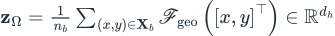
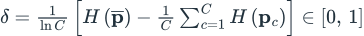
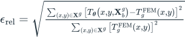

整体概括
要共享的是多样形状带来的预测能力
Fed-PIGANO 输入描述零件形状的边界点云和一个查询坐标，输出该点的温度。各站不汇集零件形状，训练时聚合模型参数。实验中的激光、材料和边界条件保持相同，检验的是一个稳态导热算子跨几何的预测，不是把不同机器的热历史拟合到同一模型。
对照原文证据
The goal is a single geometry-aware model T_{\boldsymbol{\theta}}(x,y;\mathbf{X}_{b}) that predicts the temperature at any point (x,y) of a geometry \Omega described by its boundary point set \mathbf{X}_{b} , including new candidate geometries that no client has seen, such as those that arise when part designs are revised (Section 1 ). The geometries remain at their clients, and only model parameters are exchanged with a central server. The federated objective isIn our setting, all sites share the same metal AM thermal process, with the same steady-state heat conduction equation, Gaussian laser source, and material properties. Under this setting, site-to-site differences arise from differences in the local distributions of part geometries rather than from differences in the underlying thermal physics or process conditions (Fig. 1 a).最强证据是站点平均，不是所有形状都更准
模拟基准中，七次重复下的 12 个情景—站点均值显示联邦相对 L2 误差在 1.83%–2.04%，纯本地的同类均值最高达 20.46%；联邦 PDE 残差也低于纯本地。集中合并几何后的相对误差相近，但不把集中式参考与联邦写成完全等价。
对照原文证据
Over seven replications, Fed-PIGANO achieves mean relative \ell_{2} errors of 1.83%–2.04% across all 12 scenario–site cases, compared with up to 20.46% for Local-only training, and consistently yields lower PDE residuals. Its prediction accuracy is comparable to that of a centralized model trained on the pooled geometries of all sites.The advantage persists across S2–S4, with Fed-PIGANO achieving lower mean values for both metrics in all 12 scenario–client cases.Research gap
留出查询点与留出整个几何不是同一回事
固定域的物理知情网络能在同一零件查询新坐标，却通常要为改变的域重新训练。几何感知网络能接受新边界，但以集中持有训练几何为前提。作者要填补的缺口是在共享方程的条件下跨站训练几何感知模型；这是作者给出的研究动机，不是全领域查新。
对照原文证据
In this setting, the model predicts at unseen coordinates within the same geometric domain, but a change in part geometry requires retraining the model. This limits its use in design tasks that repeatedly evaluate different geometries ( Kashefi and Mukerji, 2022 ; Saimon et al., 2026b ; Zhong and Meidani, 2025 ) . Geometry-aware physics-informed models, reviewed in Section 2.2 , address this limitation by learning across multiple geometries.Geometry-aware physics-informed models (Section 2.2 ) predict across varying domains but assume that all training geometries are available in one place. Federated learning studies in manufacturing and scientific machine learning (Section 2.3 ) keep data local but do not consider varying geometric domains across clients.This work addresses this gap with Fed-PIGANO, which trains a geometry-aware physics-informed model across AM sites without pooling their part geometries.把不同域分给各站，比拆同一域的采样点多了一层
传统的单域联邦 PDE 实验只分配同一方域的配点，不用在各站学习不同边界的表示。这里客户端虽然求同样的导热方程，但输入的域来自不同形状族；框架同时聚合编码器和预测器。作者没有用本实验单独证明只聚合预测器就一定不够。
对照原文证据
In their federated PINN formulation, the collocation points of a single square domain are divided among clients. All clients thus solve the same PDE on the same domain, and the samples distributed across clients are spatial coordinates rather than different domains . This formulation therefore does not require a geometry encoder to represent different domain shapes across clients, and the study does not address AM thermal problems.Federated training must therefore aggregate both the geometry encoder and the prediction network of the local models. The resulting global model learns from the geometry families of all sites and can predict on unseen geometries beyond any single site’s training set, without pooling the geometries.算法主线

原图由 arXiv 加载；若未显示，可打开下方原图链接。
跟着原图读
- 先看哪里：从同站的两个输入沿箭头走
圆圈中的 (x,y) 进 trunk，边界 Xb 进几何编码器，在 Concat 拼接，经解码出标量温度；三种站点颜色表示独立站，不是模型质量。
- 能说明什么：中央聚合的仍是同构模型
两条橙箭头区分全局模型下发和本地模型上聚，右下给新几何上的颜色温度示意；色标不是误差尺度，框架图不能拿来做热斑定量对照。
不能推出什么：图不是通信扩展性或隐私证明，也不意味着右下温度来自现场。
形状特征和查询位置一同决定温度
使用共享网络逐个编码边界点，用均值池化得到整件零件的向量，不依赖点的排列。查询坐标经线性 trunk 得到另一向量，与几何向量拼接后由 decoder 输出标量温度。推断时沿新边界算一次几何向量，逐点查询，不需要该新件的有限元温度作为输入。
对照原文证据
Following Zhong and Meidani (2025) , the geometry encoder \mathcal{F}_{\mathrm{geo}} is a four-layer fully connected network with widths 2\to d_{h}\to d_{h}\to d_{h}\to d_{h} , \tanh activations on the hidden layers, and a linear output layer. It is applied with shared weights to every boundary point, and the resulting features are averaged into the geometry embeddingMean pooling makes \mathbf{z}_{\Omega} independent of the ordering of the boundary points ( Qi et al., 2017 ; Saimon et al., 2026a ) , and the same embedding is used for every query point on that geometry. The trunk network is a single linear layer that lifts the query point to \mathbf{u}(x,y)=\mathbf{W}^{\mathrm{tr}}[x,\,y]^{\top}+\mathbf{b}^{\mathrm{tr}}\in\mathbb{R}^{d_{h}} . The two features are then concatenated and passed to the decoder \mathcal{F}_{\mathrm{dec}} , a fully connected network of the same form with widths 2d_{h}\to 2d_{h}\to 2d_{h}\to 2d_{h}\to 1 :We train PI-GANO with a physics-informed loss derived only from the governing equation and boundary condition of Section 3.2 , without temperature labels from either simulations or sensors. FEM solutions serve only as reference fields for evaluation (Section 4.5 ). For a single geometry g , the loss combines a boundary-condition term and a PDE-residual term,服务器发权重，客户端保留局部优化器历史
每轮同步广播参数，将本地权重替换为全局权重，而 Adam 的一二阶矩和步数跨轮保留。客户端在本地几何集合上更新，然后服务器聚合完整参数。另收取每站的验证损失标量，驱动统一的降学习率计划与检查点选择。因此不传几何不等于只交换权重、不交换任何其他量。
对照原文证据
Broadcast and local training. At the start of round r , each client sets \boldsymbol{\theta}_{c}\leftarrow\boldsymbol{\theta}^{r-1} , while \mathbf{m}_{c} and \mathbf{v}_{c} carry over from the previous round. The client then runs E local epochs over \mathcal{D}_{c}^{\mathrm{tr}} . Let t be the step counter of client c , which is not reset between rounds.The global model is thus a parameter average of local models trained on different sets of geometries. Only model parameters are communicated, and the moment estimates \mathbf{m}_{c} and \mathbf{v}_{c} stay at each client.Validation and model selection. After aggregation, each client evaluates \boldsymbol{\theta}^{r} on its validation set and returns the scalar loss to the server, which formsThe server uses \mathcal{L}_{\mathrm{val}}^{r} for two purposes. First, it controls a single learning rate \eta shared by all clients. The rate starts at \eta_{0} and is reduced by a fixed factor, down to a floor \eta_{\min} , with ReduceLROnPlateau训练用 PDE 和边界，数值温度只用于评测
每个训练几何上，边界项约束环境温度；方程项用自动微分求查询坐标二阶偏导，在完整采样点集上计残差，含边界点。验证选模仍不需要参考温度。有限元网格提供点位，有限元温度是测试参照，不等于作者用了真实传感器标签。
对照原文证据
We train PI-GANO with a physics-informed loss derived only from the governing equation and boundary condition of Section 3.2 , without temperature labels from either simulations or sensors. FEM solutions serve only as reference fields for evaluation (Section 4.5 ). For a single geometry g , the loss combines a boundary-condition term and a PDE-residual term,The PDE term enforces Eq. ( 6 ) at every point of the full point set \mathbf{X}^{g} , including the boundary points:with \Lambda and (x_{L},y_{L}) as given in Section 3.2.2 . The second derivatives are obtained by automatic differentiation of T_{\boldsymbol{\theta}} with respect to x and y .The mesh thus supplies the training point locations, while the FEM temperatures at these nodes serve only as reference values for evaluation (Section 4.5 ).关键公式
先无量纲化，再在客户端计算物理残差
作者以光束半径缩放坐标、以环境温度缩放温度，边界目标因而是无量纲的一。源项在每个客户端相同，域变化体现在边界嵌入、查询坐标和采样分布，而不是改换激光参数。训练损失求导针对查询坐标，不对有限元标签求导。
对照原文证据
The parameters in Table 2 span several orders of magnitude. We therefore nondimensionalize the problem, which combines them into a single source amplitude and brings the network inputs, the output, and the PDE terms to order one. This matches the scale assumed by standard weight initialization and keeps the boundary and PDE loss terms comparable in magnitude, which improves the conditioning of training ( Wang et al., 2023b ) . We use the beam radius r_{b} as the length scale and the ambient temperature T_{a} as the temperature scale:The boundary term enforces the Dirichlet condition ( 7 ) on the boundary point set:with \Lambda and (x_{L},y_{L}) as given in Section 3.2.2 . The second derivatives are obtained by automatic differentiation of T_{\boldsymbol{\theta}} with respect to x and y .The residual ( 18 ) has the same operator and source term at every client, and client data enter the loss only through the geometry.误差和方程残差回答不同问题
相对误差用有限元场的范数归一化，衡量预测偏离参考多少；方程残差 RMSE 以无量纲残差逐点平方再平方根，衡量是否接近共同方程。即使方程残差很小，仍要另查边界是否满足，也不应把温度场相对误差直接当成峰值温度的百分比误差。
对照原文证据
For a test geometry g , let T^{\mathrm{FEM}}_{g}(x,y) be the FEM reference temperature at a point (x,y)\in\mathbf{X}^{g} . The relative \ell_{2} error on g , which is the same in dimensional and nondimensional units, iswhere \mathcal{R}_{\boldsymbol{\theta}} is the nondimensional residual of Eq. ( 18 ) and \boldsymbol{\theta} is the evaluated model. Lower values are better for both metrics.For a single geometry g , the loss combines a boundary-condition term and a PDE-residual term,只平均同构网络的对应参数
假设三个站等权，对应某个权重分别为 0.2、0.5、0.8，本轮服务器的该权重为 0.5。该算子不把三套预测温度逐点平均。
符号与实现提醒
- θᵣ / θcᵣ
- 本轮全局及第 c 站完整参数，张量形状逐层一致
- wc / C
- 训练几何数量占比，无量纲 / 客户端数
- r
- 通信轮次
所有客户端同步参与；训练计算用到的本地 Adam 矩不在此式平均。
边界点如何变成一个几何向量

假设两个边界点编码成 (2, 0) 和 (0, 4)，均值向量为 (1, 2)；互换点的顺序不改变向量。重复抽样一类边界位置却会改变平均，因此排列不变不等于对采样分布不敏感。
符号与实现提醒
- Xb / nb
- 无量纲二维边界点集合 / 点数
- Fgeo
- 在所有点上共享参数的几何编码器
- zΩ / dh
- 整域特征向量 / 特征宽度
推断保持边界采样规则，评估点密度改变时的敏感性；不要混入待求温度。
把预测场代入原 PDE，计算未满足的部分
取源中心处的示意计算：若预测场两方向的无量纲二阶偏导和为 −12，源幅为 13，指数因子在中心为 1，残差为 −1，方程项的该点平方贡献为 1。这不是作者的数值或测量。
符号与实现提醒
- x,y / xL,yL
- 无量纲查询坐标 / 源中心坐标
- Tθ / Xb
- 标量无量纲温度预测 / 形状边界点集合
- Λ
- 无量纲源幅
- Rθ
- 有符号无量纲点残差
求导时把形状向量视为该查询的固定条件；检查负号与坐标缩放。不用此式替代定温边界损失。
用几何族组成的差异描述站际异质性

两个站若各只有一种且不是同一族，各站熵为零，等权混合分布是 (0.5, 0.5)，熵为 ln 2；用 ln 2 归一化得 1。若两站族比例相同，无论个体形状是否相似，差值为零。
符号与实现提醒
- p_c / p̄
- 按预定类别排列的客户端比例向量 / 等权混合向量
- H
- 自然对数下的 Shannon 熵
- C / δ
- 客户端数 / 无量纲散度
零频率按极限处理；公式使用等权客户端及至少两个客户端，不能作几何距离来解释。
先在每件几何上计算相对温度场误差

玩具示例：两个点的参考值为 (3, 4)，预测为 (3, 5)，差向量的 L2 范数是 1，参考范数是 5，得 0.20，即 20%。换相同的乘法温标不变，给两个场加同一个温标常数则一般会改变这个值。
符号与实现提醒
- Xg
- 单一几何的边界与内部采样点合集
- Tθ / T_FEM
- 预测及有限元参考，使用相同温标
- ε_rel
- 无量纲相对误差，可转百分数
先每件归一再按几何平均，不要把所有点混成一个范数；它也不是最热点或峰值的误差。
实验怎么做
重复内固定测试几何，改变的只是训练和验证分布
每站从当地池不重叠地抽取训练、验证和测试，分别为 50、25 和 50 个几何；测试池每族 10 个，同次重复跨情景复用。方案从相同族比例到局部缺族，但网络合计每族仍是 30 个训练几何。横轴异质性描述族频率差异，不是未见的形状族与训练族有多远。
对照原文证据
The test set \mathcal{D}_{c}^{\mathrm{te}} contains 10 geometries per family ( G=50 ). Within a replication, it is drawn once per client and reused in every scenario, so differences in test performance across scenarios reflect only the training and validation sets. The training set \mathcal{D}_{c}^{\mathrm{tr}} always contains n_{c}=50 geometries, and the validation set \mathcal{D}_{c}^{\mathrm{val}} contains 25 geometries with the same family proportions.Here, \delta measures heterogeneity in family composition, not the similarity between individual shapes.In every scenario, each family has 30 training geometries in total, so the global mixture \bar{\mathbf{p}} is uniform and changes in \delta reflect only differences between clients.对照控制了本地训练遍数，不把集中式当实用对手
Local-only 每站独立使用同架构和损失，并对齐遍历次数。Centralized 对同一训练几何合集训练，用于观察联邦距离汇集训练有多远，但不满足不汇集几何的约束。每次重复不同划分、初值和小批次顺序，在该次重复中三种方案从同一初值起跑。
对照原文证据
Each client c trains its own PI-GANO model \boldsymbol{\theta}_{c}^{\mathrm{loc}} on \mathcal{D}_{c}^{\mathrm{tr}} without communication, using the same architecture (Section 3.4 ), loss (Eq. ( 19 )), initialization, optimizer, mini-batch size, and learning-rate schedule as Fed-PIGANO.We set E_{\max}=R\times E , so each Local-only model makes the same number of passes over its training set as each client does in Fed-PIGANO.We also train a Centralized reference, which represents the pooling setting of Fig. 1 c. It is a single PI-GANO model \boldsymbol{\theta}^{\mathrm{cen}} trained like the Local-only models, using the pooled training and validation sets of all clients. Centralized requires all geometries in one place, which our setting rules out, so it serves only as a reference, not as a competing method.The seed of a replication sets the split of each client’s geometries into training, validation, and test sets with the counts of Table 3 , the initial weights, and the mini-batch order. Within a replication, every Local-only model, the initial global model \boldsymbol{\theta}^{0} of Fed-PIGANO, and the Centralized model start from identical parameters.报告的墙钟来自单卡串行模拟
作者在单张 RTX 4090 上做七次固定种子重复；单个纯本地模型约 13 分钟，集中式约 36 分钟，三个客户端串行模拟的联邦约 39 分钟。这里的本地时间是单模型用时，不能直接与真实多站并行运行和通信耗时比较。
对照原文证据
We repeat the experiment seven times with random seeds fixed in advance and report all seven replications.We implemented all experiments in PyTorch 2.8.0 and ran them on a single NVIDIA GeForce RTX 4090 GPU. One training run takes about 13 min for a Local-only model, 36 min for Centralized, and 39 min for Fed-PIGANO, whose three clients are simulated one after another.复现还需取得完整配置和运行材料
已读取的固定版提供了 Algorithm 1、几何采样、参数与评测定义，但未找到独立的数据／代码发布声明或网络字节数与现场时延基准。按照论文配置重做是可能的验证项目，不把这次阅读当成已经复现。

原图由 arXiv 加载；若未显示，可打开下方原图链接。
跟着原图读
- 先看哪里：认清三种线和两个固定端点
点划线大圆是参照圆，小点线圈是顶点抽样区域、橙色才是样本轮廓。两端固定在中心线，红箭头给的是热源位置，不是扫描方向。
- 能说明什么：凹角来自顶点的采样区域
从左到右为凸四、五、六边形和凹五、六边形；右两幅内收顶点使轮廓出现凹角。图无独立毫米坐标轴，几何尺度应读取正文，不按截图量尺寸。
不能推出什么：这些绘制样品不能代表任意零件形状、空洞、三维层间结构或真实制造质量。
提升与证据
最大的变化发生在本地缺族最严重的站
先对每站 50 个测试几何平均，再跨七次运行计算均值和标准差。Client 3 的纯本地相对误差从低异质性 4.34% 到最强异质性 20.46%；对应的无量纲 PDE 残差 RMSE 从 6.43 到 48.76（表中均以 10 的负二次方为倍率）。联邦在各站与情景的均值更平稳。
对照原文证据
Within a replication, each metric is averaged over the G=50 test geometries of a client. The table gives the mean and standard deviation of these averages over the seven replications.The growth is largest for Client 3, which trains only on the concave families in S4. Its \epsilon_{\mathrm{rel}} rises from 4.34% in S1 to 20.46% in S4, and its \epsilon_{\mathrm{PDE}} from 6.43\times 10^{-2} to 48.76\times 10^{-2} . For Client 1,In contrast, the mean \epsilon_{\mathrm{rel}} of Fed-PIGANO stays between 1.83% and 2.04% in all 12 cases and rises by at most 0.17 percentage points from S1 to S4. Its mean \epsilon_{\mathrm{PDE}} stays between 3.34\times 10^{-2} and 3.63\times 10^{-2} . Its accuracy ( \epsilon_{\mathrm{rel}} ) is also comparable to that of the pooled Centralized reference at every \delta (Table 5 ).集中式温度误差接近，方程残差并未追平
在异质性最高情景的 Client 3，联邦与集中式的相对误差是 2.04% 与 1.96%；其 PDE 残差分别为 3.63 与 2.92（乘 10 的负二次方）。这说明不能用“精度接近”指代两个指标已经等效。集中式是汇集数据的参照，不参与表中粗体的胜负比较。
对照原文证据
Client 1 Client 2 Client 3 Method \epsilon_{\mathrm{rel}}\downarrow (%) \epsilon_{\mathrm{PDE}}\downarrow ( \times 10^{-2} ) \epsilon_{\mathrm{rel}}\downarrow (%) \epsilon_{\mathrm{PDE}}\downarrow ( \times 10^{-2} ) \epsilon_{\mathrm{rel}}\downarrow (%) \epsilon_{\mathrm{PDE}}\downarrow ( \times 10^{-2} ) S1 (S4 ( \delta=0.768 ) Local-only 10.16\pm 0.82 16.94\pm 3.41 4.96\pm 0.24 8.08\pm 0.86 20.46\pm 2.04 48.76\pm 6.69 Fed-PIGANO \mathbf{1.99}\pm 0.16 \mathbf{3.59}\pm 0.39 \mathbf{2.00}\pm 0.22 \mathbf{3.58}\pm 0.28 \mathbf{2.04}\pm 0.20 \mathbf{3.63}\pm 0.26 Centralized † \mathit{1.88\pm 0.05} \mathit{2.82\pm 0.15} \mathit{1.89\pm 0.14} \mathit{2.77\pm 0.18} \mathit{1.96\pm 0.14} \mathit{2.92\pm 0.31}\downarrow Lower is better. † Reference trained on the pooled geometries of all clients, shown in italics and not part of the bold comparison.多数单几何受益，但不是逐件保证
作者挑了一次联邦表现略差于其七次平均的重复。该次逐形状比较中，每个站点情景的 50 件里，联邦 L2 较低的有 42 至 50 件，PDE 残差较低的有 37 至 50 件；后续温度图还从这一重复的本地缺失族各挑一件，只能用于读空间分布，不能替代全部重复统计。
对照原文证据
We select one replication in which Fed-PIGANO performs slightly worse than its seven-replication average, in every scenario and for both metrics, and use it in this section and in Section 5.3 . The results of this replication are therefore conservative, since Fed-PIGANO performs better on average in the other six replications.In every scenario–client case, Fed-PIGANO gives the lower \epsilon_{\mathrm{rel}} on 42 to 50 of the 50 test geometries, and the lower \epsilon_{\mathrm{PDE}} on 37 to 50.For each client, we select one unseen test geometry from a family that is absent from its training set (Table 3 ). This mirrors a manufacturing site that receives a new geometric design not covered by its own training data. The selected geometries are CH for Clients 1 and 2, and P for Client 3.
原图由 arXiv 加载；若未显示，可打开下方原图链接。
跟着原图读
- 先看哪里：横轴异质性，纵轴按对数间隔读
横轴为四个情景的族组成散度，标值做了四舍五入。上排是相对温度误差百分数，下排数值还要乘 10 的负二次方，是无量纲 PDE 残差 RMSE。纵轴刻度不等间隔，不能由图上高度差换算线性差。
- 能说明什么：先比同一站，再比两类指标
右列纯本地曲线随情景变化最大，联邦与集中式在上排接近；下排的集中式灰方块仍低于联邦橙点。误差棒是七次重复均值之间的正负一个标准差，不是单件离散度，也不是置信区间。
不能推出什么：误差棒视觉不相交不能替代配对显著性检验；只随族组成变化的基准不代表站点之间存在不同热过程时也稳健。
局限与追问
物理过程没有跟着站点变
同一稳态、同一激光、同一材料和定温边界贯穿基准，所有合成形状出自预定多边形族。作者把三维、移动热源、瞬态问题及组织与属性耦合作为未来工作。结果不能证明面对新材料、不同扫描时序或真实零件测量误差仍能维持同等优势。
对照原文证据
We consider steady-state heat conduction on a geometry \Omega , with the superscript g dropped. The domain represents a thin horizontal cross-section of the part, i.e., an effective deposited layer of thickness h , heated by a Gaussian laser source. The material properties, laser source, and boundary condition are the same for every geometry and every client, so the part geometry is the only quantity that changes the thermal field. The governing equation isEach domain \Omega belongs to one of F=5 polygonal geometry families.Future work will extend the framework to 3D geometries and transient AM thermal problems with moving heat sources, investigate coupling with microstructure and property models, and explore secure aggregation and differential privacy to further protect proprietary part designs.几何留本地是传输边界，不是形式化隐私保证
当前位置只描述了权重聚合和验证损失汇总；作者将安全聚合与差分隐私列为未来扩展。已给实验没有展示隐私预算或真实网络的稳健性。平均结果受训练几何覆盖及联合样本量影响，不能从去掉通信的一组基线分解几何编码器、优化器状态和聚合策略的贡献。
对照原文证据
The global model is thus a parameter average of local models trained on different sets of geometries. Only model parameters are communicated, and the moment estimates \mathbf{m}_{c} and \mathbf{v}_{c} stay at each client.Validation and model selection. After aggregation, each client evaluates \boldsymbol{\theta}^{r} on its validation set and returns the scalar loss to the server, which formsThis improvement is consistent with the additional geometric diversity available through federation, as Fed-PIGANO learns from 150 training geometries compared with 50 at each individual site.Future work will extend the framework to 3D geometries and transient AM thermal problems with moving heat sources, investigate coupling with microstructure and property models, and explore secure aggregation and differential privacy to further protect proprietary part designs.用缺一族和跨物理条件拆开追问
下一步可同时测试某族只在其它站出现、全网从未出现，以及各站导热系数不同三类留出。前两类区分站际借力和真外推，后者检验固定共享方程的脆弱点。为形状等量补充随机训练样本形成对照，避免把样本量收益和联邦机制混成一个贡献。
连接你的研究
在有独立对照的电离层代理任务检验分站训练
尚未验证：以科研可用的多站 TEC 区域网格为例，固定一个在指定条件下合理的简化算子，模拟各站因观测覆盖不同而缺少某些形状或纬度的区域掩膜。沿完整日期和整站划分，隔离同一天与邻站的近重复观测；同一天气分层比较 Local-only、参数聚合和许可范围内的集中参照。
交付站点尾部，不把物理残差当定位收益
统一样本数与更新预算，报告留出区域和磁扰日的 TEC 误差、方程残差、站点高分位误差、单轮通信字节数和墙钟；另用当前物理假设不适用的条件做对照。先验证 TEC 误差改善，再独立设置定位实验评估定位影响；两者不能替代。
来源与边界
使用 arXiv v1 官方端点嵌入 Fig. 2–4 完整 PNG；该版本元数据标明 CC BY 4.0。保留作者和英文原图注，未裁图、重绘或加注；本站不镜像作者图、PDF 或全文。
对照原始英文摘要
收录历史：2026-11-17
原文许可：查看本版本许可 ↗；外部嵌入不等于任意转载授权。